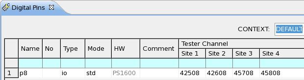
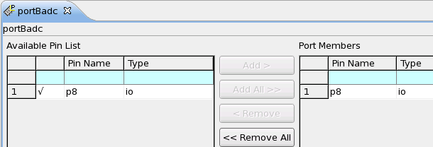
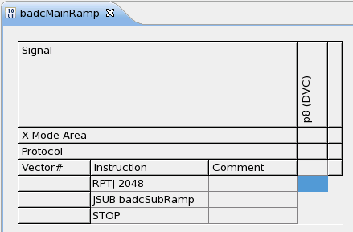
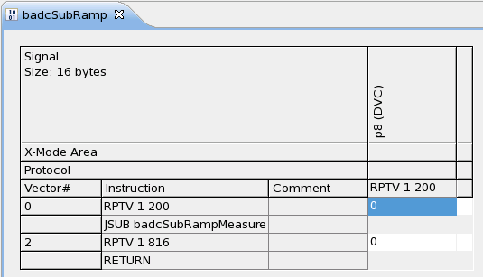
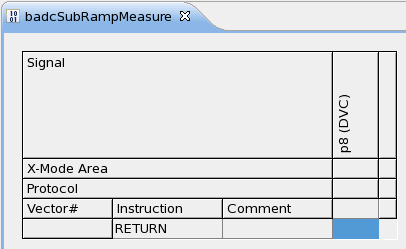
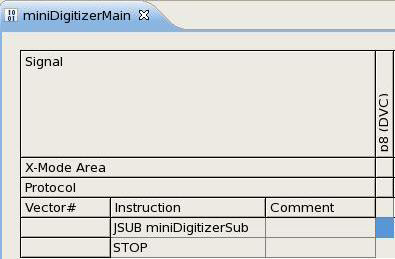
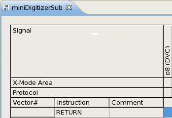
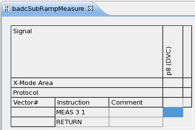

How to use the BADC as digitizer
About this task
The BADC of a PS1600 channel card can be controlled by a pattern to work as a voltage or current digitizer to measure voltage or current waveforms. There are two ways to measure the waveforms:
- Sequencer based measurement
The sequencer triggers one or multiple actions. In each action, multiple samples can be taken and internal averaging is performed to get the measurement value. This is typically used for linearity measurements (DNL and INL). You can put the action in a repeat loop to shorten the length of the pattern.
- Trigger based measurementThe sequencer triggers the board ADC to measure a waveform. The board ADC is clocked by a PLL which is independent from the user period of the pattern. The sampling period can be adapted via a clock divider, but only in multiples of 25 ns. Additionally the waveform size (number of points to be measured) can be specified. This is typically used for dynamic DAC testing (SND, SNR, THD).Note
The typical time required for a BADC or PPMU measurement can be calculated as follows:
twait = (25 μs + N * 4 μs) where: 25 μs is a one-time overhead "N" is the number of samples After the measurement is performed, SmarTest needs an additional time (typical) of 20 μs * N, where N is the number of samples, to fetch the results. For this additional duration of time, the BADC cannot be used to perform a new measurement.
In additional, an extra wait time of, at least, 60 μs must be added for the first BADC measurement after switching the measurement mode on one channel for EXA Scale digital cards or Smart Scale digital cards in Exa Scale compatibility mode.
These two ways both can be used for normal voltage measurements (high impedance measurements and non high impedance measurements), high voltage measurements and current measurements.
Before you begin
You have a DAC device, and it consists of pin configuration, level, timing and pattern setup files.
Procedures
Follow the steps below to use BADC as digitizer.
Step1: prepare the pin configuration file
- In the Pin Settings editor, click Digital Pins
editor to define your digital pin used as digitizer.

- In the Ports editor, define a new port for BADC, that contains the
pin connected the DAC output.

Step2: prepare the timing and level setup files
- Refer to PS1600 timing and vector setup to set up your timing configuration.
- Refer to PS1600 level setup to set up your level configuration.
Step3: prepare the patterns
For static analog test
- In the Pattern Explorer, create a main label for your BADC port. It
needs to call a sub-label. The parameter of the RPTJ instruction defines the number of points
to be measured.

- Create a sub-label for the measurement point. Within the sub-label, it contains a
subroutine, which defines the BADC measurement. For every measurement point filling vectors
will be inserted. Note As shown in the picture below, this sub-label should consist of two parts:
- Filling vectors, which are inserted via the RPTV instruction, because digital sequence is much faster than the BADC measurement.
- Using the JSUB instruction to call the BADC measurement subroutine.

- Create an empty label for the BADC measurement, which will be inserted via test method.

For dynamic analog test
- In the Pattern Explorer, create a main label for your BADC port. In
the label, call the sub-routine to do the measurement.

- Create an empty label for the BADC measurement, which will be inserted via test method.

Step4: create test methods for using BADC as Digitizer
- To add the BADC measurement into the empty sub-label created above, you can refer to the
following code example.
Example of static analog test
virtual void createBadcMeasure() { BADC_MEASURE badcMeasure; badcMeasure.pin("portBadc").numberOfSamples(32); PATTERN_CONTROLLER patternControllerBadcMeasure; patternControllerBadcMeasure.label("badcSubRampMeasure","portBadc") .add(badcMeasure); patternControllerBadcMeasure.setup(); } - Duration of a BADC measurement: t=25us + (numberOfSamples * 4us).
A pattern can run up to 400MHz, depending on user period. Filling vectors have to be added to keep the measurement distance big enough.
Example of dynamic analog test
virtual void createMiniDigitizerSetup() { int waveformSize = 1000; double samplePeriod = 1; BADC_MEASURE badcMeasure; badcMeasure.pin("portBadc").waveformSize(waveformSize) .waveformSamplePeriod(samplePeriod us); PATTERN_CONTROLLER patternControllerBadcMeasure; patternControllerBadcMeasure.label("miniDigitizerSub","portBadc") .add(badcMeasure); patternControllerBadcMeasure.setup(); }
Step5: create test suites to call the UTM
- Generate a testflow and insert some test suites, which will use your prepared UTM codes from step 4.
- After running the previous code example, you can see the sub-label for the BADC measurement
looks like below. The content in the sub-label is the same for measuring one value in one
measurement and measuring multiple values in one measurement.

Note A BADC measurement (MEAS instruction) costs 8 vectors internally.
Results
You have defined a label containing a BADC measurement. This label can be executed for example in the FUNCTIONAL_TEST() API, and the result can be uploaded via the DC_RESULT_ACCESSOR API like below.
DC_RESULT_ACCESSOR result;
result.uploadResult("portBadc",TM::RESULT_INDEX);
ARRAY_D waveform = result.getValues("portBadc");What to do next
Functional changes
- Introduced in SmarTest 7.2.0